Utilización de los IDEs
Instalar y configurar IDEs
En estos apartados se explica paso por paso cómo instalar programas (IDES) que proporcionan herramientas y funcionalidades para ayudar a los programadores a escribir, depurar y mantener código de manera más eficiente. Los IDEs integran varias herramientas que normalmente se usarían por separado, como un editor de código, un compilador o intérprete, y un depurador, en una sola interfaz de usuario. Esto facilita el proceso de desarrollo al centralizar las tareas más comunes en un solo lugar.
¿Qué son los módulos?
Los módulos son componentes o secciones específicas que permiten que el entorno ofrezca diferentes funcionalidades para ayudar en el proceso de desarrollo de programas. También se conocen como extensiones o plugins.
IntelliJ IDEA
- Busca en tu navegador: “IntelliJ IDEA download JetBrains”.
- Entra al sitio oficial de JetBrains.
- Selecciona la versión Community (gratuita) o Ultimate (de pago).
- Descarga el instalador para Windows (archivo .exe). 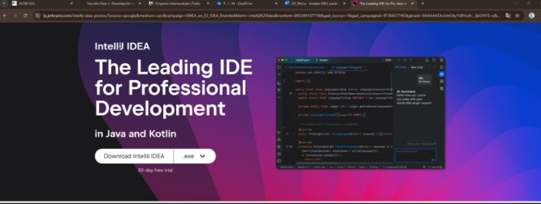
- Abre el instalador.
- Selecciona si deseas crear un acceso directo en el escritorio.
- Puedes activar la opción Add to PATH si deseas ejecutar IntelliJ desde consola.
- Opcionalmente puedes asociar extensiones como .java o .kt a IntelliJ. 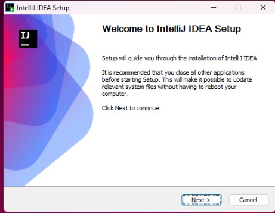
- Haz clic en Install.
- Una vez completado, abre IntelliJ.
- En el primer inicio, selecciona si deseas importar configuraciones anteriores o comenzar con la configuración por defecto. 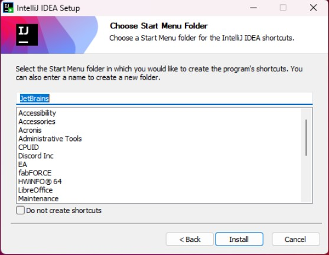 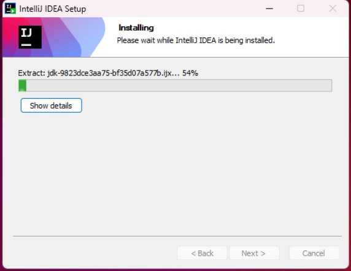 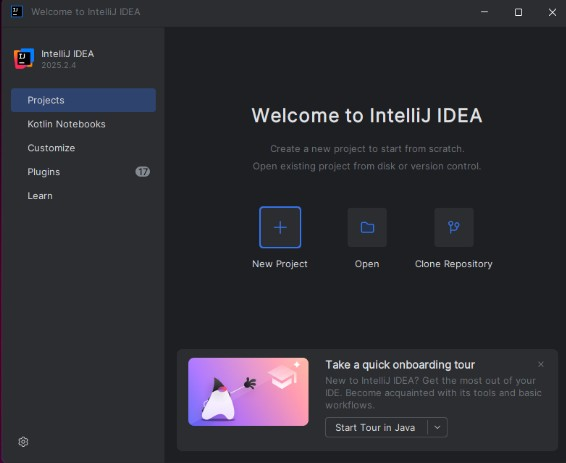
Instalación de módulos de interés (plugins) en IntelliJ IDEA
- Abre IntelliJ IDEA.
- En el panel izquierdo, entra a Plugins.
- Selecciona el plugin que deseas tener (por ejemplo, “JetBrains AI Assistant”). 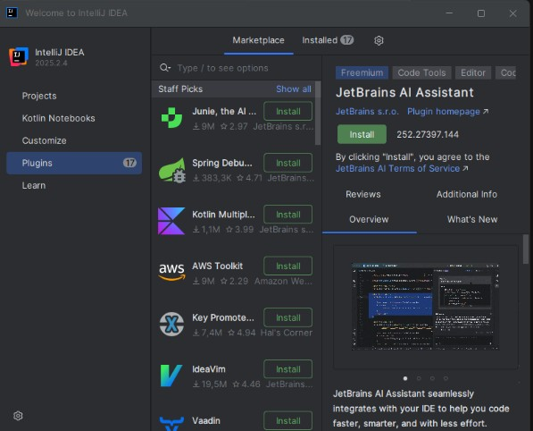
- Haz clic en Install. 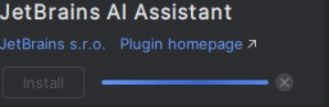
- El asistente con IA queda integrado y accesible para consultas, generación de código, documentación, mensajes de commit, explicación de errores en tiempo de ejecución, etc.

Eclipse
- Busca en tu navegador: “Eclipse IDE download”.
- Entra al sitio oficial de Eclipse Foundation.
- En la página de descargas, haz clic en el botón de descarga correspondiente (por ejemplo, Download x64). 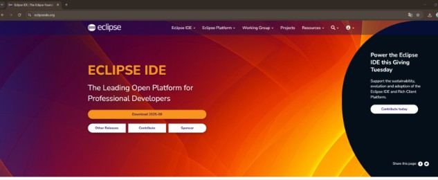 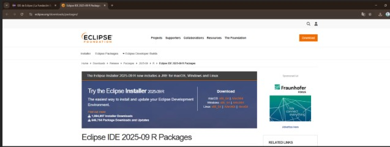
- Descargarás un archivo como “eclipse-inst-win64.exe”. 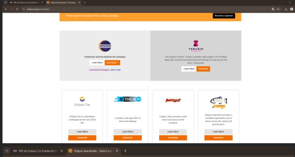 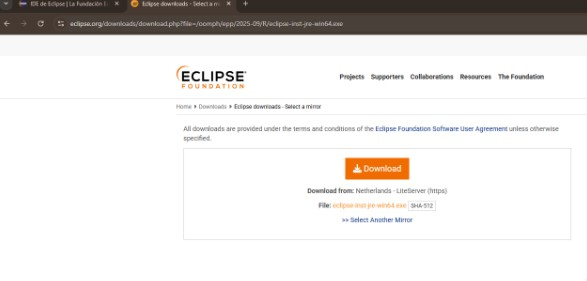
- Ejecuta el instalador.
- Selecciona la distribución que necesites: Eclipse IDE for Java Developers, C/C++, PHP, Embedded C/C++, etc.
- Selecciona la carpeta donde deseas instalar Eclipse. 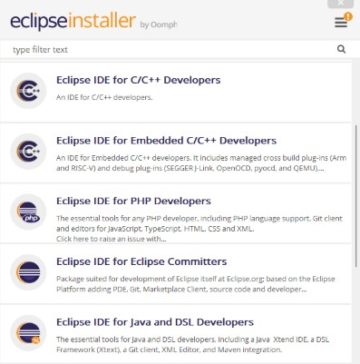
- Haz clic en Install y acepta los permisos cuando te lo pida. 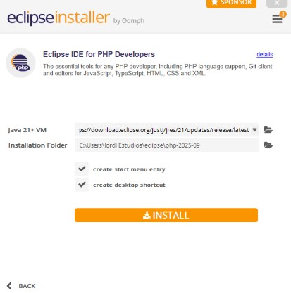 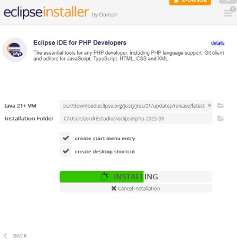
- Una vez instalado, abre Eclipse.
- En el primer inicio, selecciona un workspace (carpeta donde se guardarán tus proyectos). 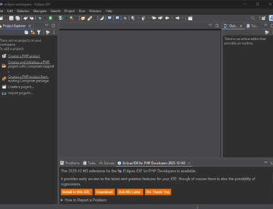
Instalación de módulos de interés (plugins) en Eclipse
- Abre Eclipse.
- Ve a Help → Eclipse Marketplace. 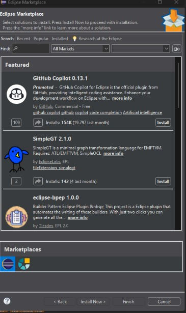
- En “Marketplace”, busca el plugin que necesites (por ejemplo, “GitHub Copilot 0.13.1”). 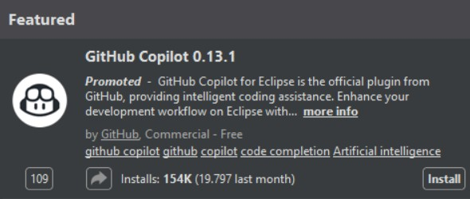
- Instálalo desde ahí y sigue los pasos del asistente.
Visual Studio Code
- Busca: “Visual Studio Code download”.
- Entra al sitio oficial de Microsoft para VS Code. 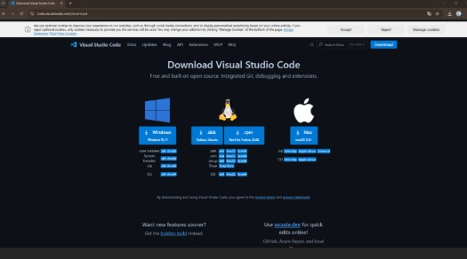
- Descarga la versión Windows x64 System Installer.
- Ejecuta el archivo .exe.
- Acepta la licencia.
- Marca las opciones recomendadas (como agregar al PATH). 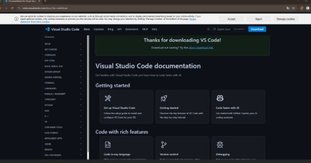 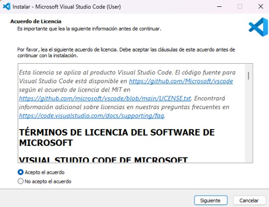
- Instala y abre Visual Studio Code. 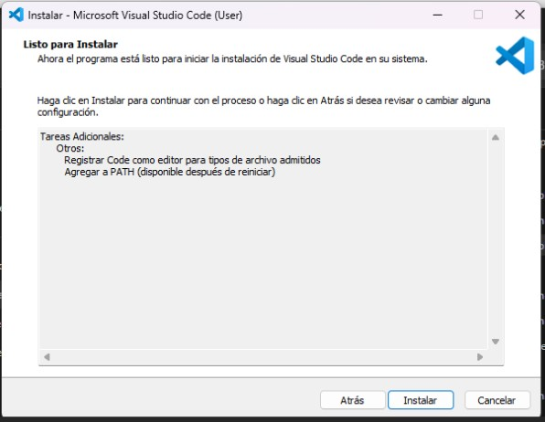 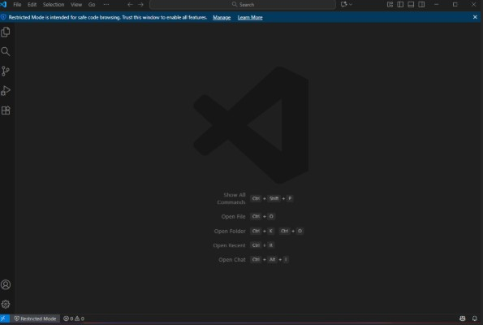
Instalación de diferentes módulos de interés en VS Code
Auto Rename Tag
Renombra automáticamente la etiqueta de cierre al editar HTML/XML (también soporta XML y JSX). Se instala desde el apartado de extensiones buscando “Auto Rename Tag”.
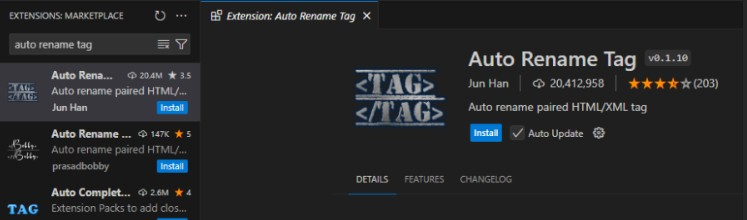Live Server
Despliega un servidor de desarrollo local y recarga en tiempo real con cada guardado, útil para revisar la interfaz al momento. Se instala desde el apartado de extensiones buscando “Live Server”.
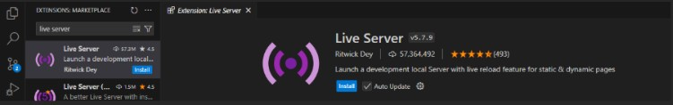Error Lens
Mejora la visibilidad de errores, warnings y diagnósticos del lenguaje directamente en el editor, con descripciones para corregir más rápido. Se instala desde Extensiones buscando “Error Lens”.
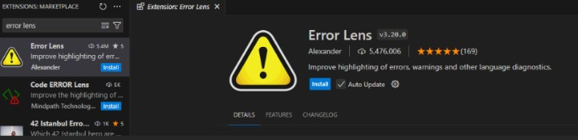¿Cómo eliminar extensiones en VS Code?
Ve a “Extensiones”, busca el nombre del módulo que deseas desinstalar y pulsa “Uninstall”.
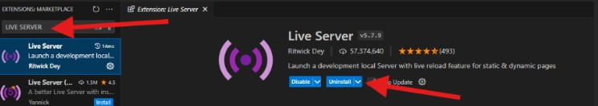¿Cómo personalizar la visualización en Visual Studio Code?
Cambiar el tema de color
- Ve a “View” → “Command Palette”. 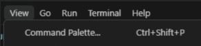
- Escribe “Color Theme” y selecciona “Preferences: Color Theme”. 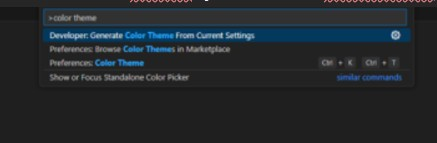
- Elige un tema (por ejemplo: Dark+ (default dark), Light+ (default light), Abyss, Monokai, etc.). 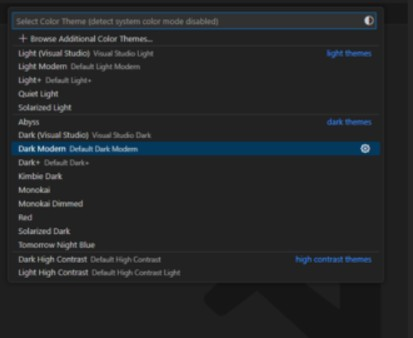

Modificar la fuente y tamaño del texto
Visual Studio Code
- Abre la configuración: File → Preferences → Settings.
- Busca “Font”.
- Ahí puedes cambiar el tipo de fuente, tamaño y opciones relacionadas (Editor: Font Family, Editor: Font Size, Code Lens, Inlay Hints, etc.).
NetBeans
En Tools → Options → Fonts & Colors puedes cambiar perfil (p. ej., FlatLaf Dark/Light), tamaño y estilo de fuente, colores de sintaxis, anotaciones, etc. Incluye “Font Chooser” para seleccionar tipografías (Monospaced, JetBrains Mono, etc.), estilos (Plain/Bold/Italic) y tamaño.
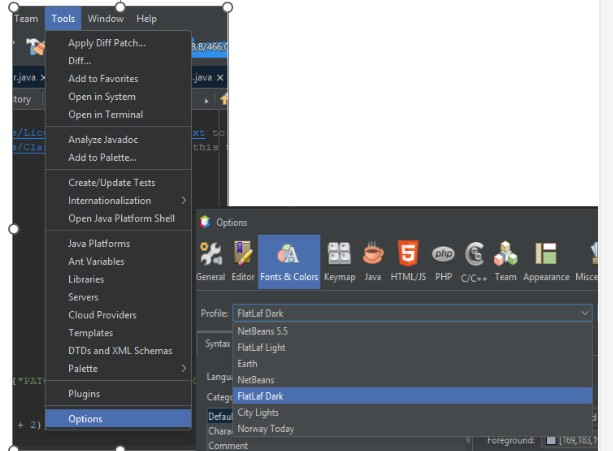IntelliJ IDEA
En Settings → Editor → Font puedes seleccionar la tipografía (p. ej., JetBrains Mono), tamaño, altura de línea y ligaduras. También puedes ajustar el color scheme y typography settings.
Eclipse
En Window → Preferences → General → Appearance → Colors and Fonts puedes cambiar fuente, tamaño, colores de texto, asistentes de contenido y más.
Personalización de apariencia en los IDEs
NetBeans
Tools → Options → Fonts & Colors. Cambia tema (FlatLaf Dark/Light, City Lights, Norway Today, etc.), colores de “Character”, “Comment”, “Identifier”, fondo, efectos, y más.
IntelliJ IDEA
File → Settings → Appearance & Behavior → Appearance. Cambia el tema principal (Dark, sincronización con OS, etc.) y personaliza Menus and Toolbars (Main Menu, Main Toolbar, Editor Popup/Gutter, Project View, Navigation Bar, Debug Header, etc.).
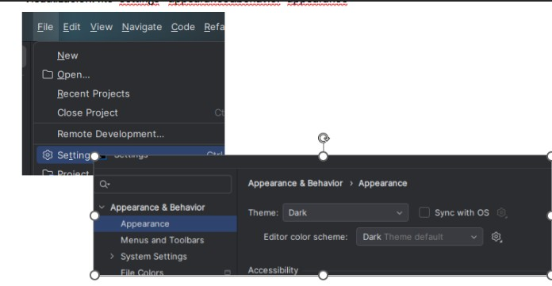 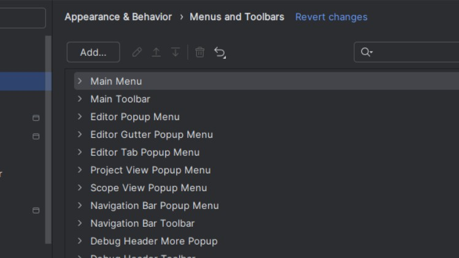Eclipse
Window → Preferences → General → Appearance. Activa “Enable theming”, selecciona “Theme” (por ejemplo, Dark) y ajusta “Color and font theme”.
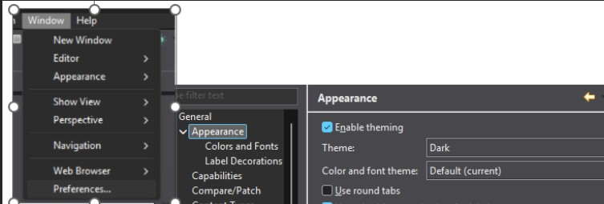
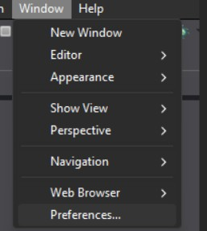
Personalizar atajos de teclado
Visual Studio Code
- Abre la Command Palette.
- Escribe “Preferences: Open Keyboard Shortcuts (JSON)” para editar keybindings.json manualmente.
NetBeans
Tools → Options → Keymap. Permite actualizar, modificar y añadir atajos. Dispone de perfiles predeterminados basados en otros IDEs (NetBeans, Eclipse, Emacs, Idea, NetBeans 5.5, etc.).
IntelliJ IDEA
Settings → Keymap. Ofrece perfiles (Windows, Eclipse, Emacs, NetBeans, Sublime Text, Visual Studio, VSCode, macOS, etc.) y permite editar acciones del editor, version control, build/deploy, debugger, herramientas externas.
Eclipse
Window → Preferences → General → Keys. Cambia el esquema (Default), y mapea comandos (por ejemplo, Activate Editor, Abort Build, Add Block Comment) con bindings (F12, Ctrl+Shift+/, etc.) según el contexto (In Windows, Editing, Source).
Configuración del sistema de actualización (VS Code)
Verificar actualización manualmente
- Abre VS Code.
- Ve a Help → Check for Updates.
- Si hay una actualización, VS Code te lo notificará para instalarla.
Cambiar configuración de actualizaciones automáticas
- Abre File → Preferences → Settings.
- Busca “update”.
- Configura:
- update.channel: “default” o “insider”.
- update.mode: “default” (auto) o “manual”.
- Extensions: Auto Check Updates y Auto Update.
- Update: Show Release Notes.
Visual Studio Code: características generales y específicas
Características comunes
- Multiplataforma (Windows, macOS, Linux).
- Soporte de múltiples lenguajes mediante extensiones (JavaScript, Python, etc.).
- Extensiones para añadir funcionalidades y herramientas.
- Depuración integrada.
- Git integrado.
- IntelliSense (autocompletado y sugerencias inteligentes).
- Interfaz personalizable (temas, disposición, accesibilidad).
Características específicas
- Vista dividida (paneles horizontales/verticales).
- Terminal integrada.
- Soporte remoto (servidores, contenedores, entornos remotos).
- Live Share (colaboración en tiempo real).
- Refactorización de código (mejora y reestructuración segura).
VS Code es ideal por su ligereza, flexibilidad y herramientas avanzadas que mejoran la productividad.
NetBeans
Descarga e instalación
- Busca: “Apache NetBeans download”.
- Entra al sitio oficial de Apache NetBeans.
- Selecciona la versión más reciente (por ejemplo, Apache NetBeans 28, lanzada el 10 de noviembre de 2025).
- Elige el instalador para Windows (archivo .exe o .msi según la versión), o descarga el binario independiente “netbeans-28-bin.zip”.
- Verifica integridad con firmas PGP (.asc) o hash (.sha512) si lo deseas.
- Descarga el archivo .zip y descomprímelo. Dentro de la carpeta “netbeans” → “bin”, ejecuta el programa (netbeans/netbeans64).
 >
>
 >
>
 >
>
Configuración del sistema de actualización en NetBeans
- Inicia NetBeans.
- Ve a Tools → Plugins.
- Accede a la pestaña Settings.
- Configura “Update Centers”: activar/desactivar repositorios (Enabled), editar la URL (Edit), eliminar (Remove).
- Para añadir una fuente distinta: pulsa Add, define Name y URL del repositorio (proporcionada por el proveedor del plugin).
- Configura “Automatically Check for Updates” y “Check Interval” (por ejemplo, Every Week). Ajusta Proxy Settings/Advanced si es necesario.
 >
>
 >
>
Instalar plugins en NetBeans (Plugin Manager)
- Tools → Plugins.
- Pestañas:
- Available Plugins: plugins disponibles en los repositorios configurados.
- Downloaded: instalar plugins desde archivos .nbm.
- Installed: lista de plugins instalados (activar/desactivar/desinstalar).
- Settings: repositorios y comprobación automática de actualizaciones.
- Marca los plugins que necesites en “Available Plugins” y pulsa Install.
- Sigue el asistente y reinicia NetBeans si lo solicita.
- Ejemplo: “Memory Usage Statusline”.
Generar un ejecutable en NetBeans y ejecutar en terminal
- Selecciona el proyecto y ejecuta “Clean and Build Project”.
- Se crea la carpeta “dist” dentro del proyecto.
- En el archivo README se indica cómo ejecutar el .jar desde terminal, por ejemplo:
- java -jar "UT3_Arrays_Ejemplos.jar"
- Abre la carpeta “dist” en terminal y ejecuta el comando anterior para correr el proyecto.
Exportar desde NetBeans e importar en Eclipse
- Selecciona el proyecto y ejecuta “Clean and Build Project”. >
- Se crea la carpeta “dist” dentro del proyecto.
- En el archivo README se indica cómo ejecutar el .jar desde terminal, por ejemplo:
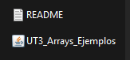>
- java -jar "UT3_Arrays_Ejemplos.jar" 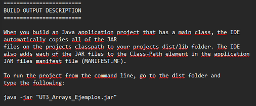>
- Abre la carpeta “dist” en terminal y ejecuta el comando anterior para correr el proyecto. 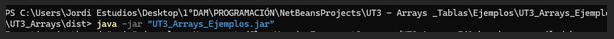>
 >
>
Exportar desde NetBeans e importar en Eclipse
- En NetBeans: File → Export Project → To ZIP. Selecciona el proyecto y la ruta (Build ZIP) y exporta. 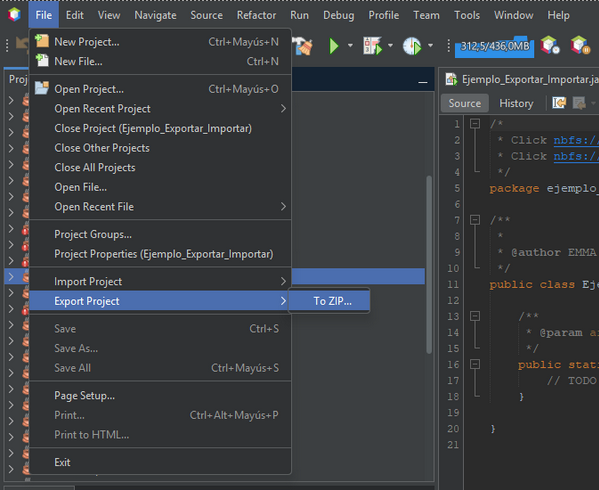 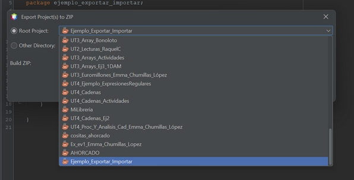 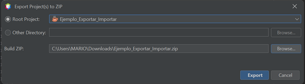
- En Eclipse: File → Import → General → Existing Projects into Workspace. 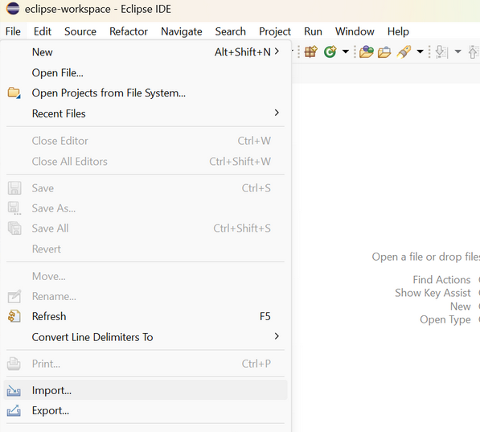 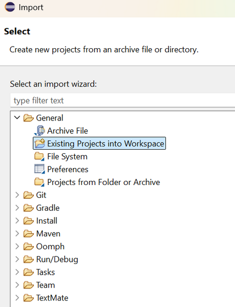
- Importa el proyecto:
- Opción “Select root directory” (requiere ZIP descomprimido), o
- Opción “Select Archive File” (importa directamente el ZIP). 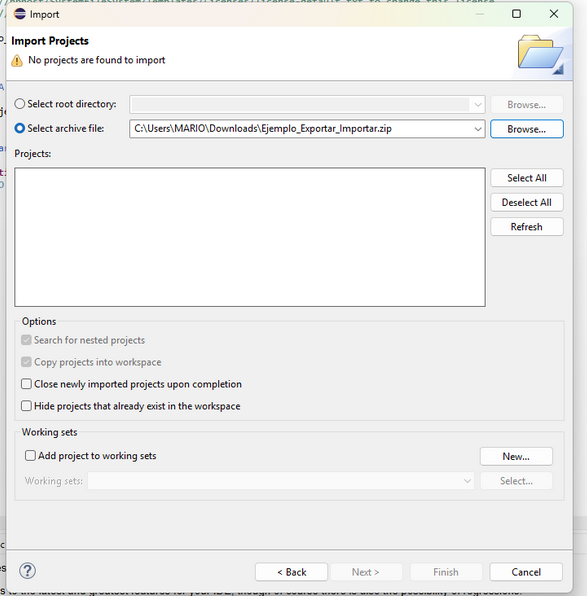
- Pulsa Finish. El proyecto aparecerá en Eclipse. 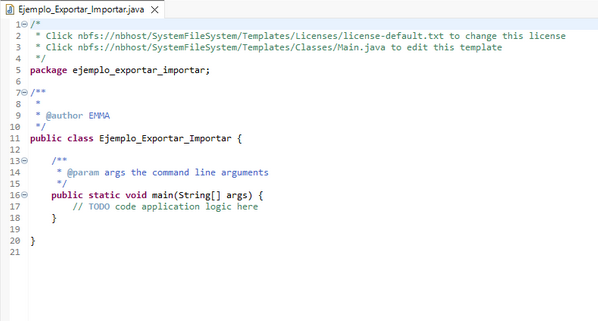